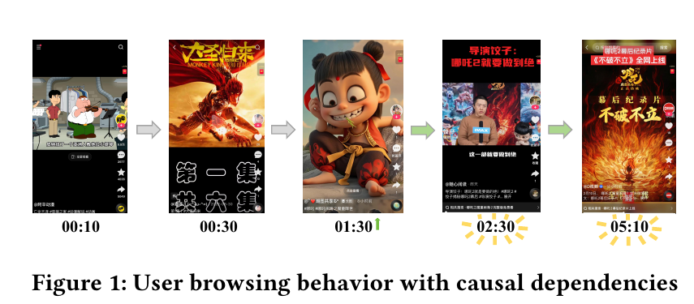
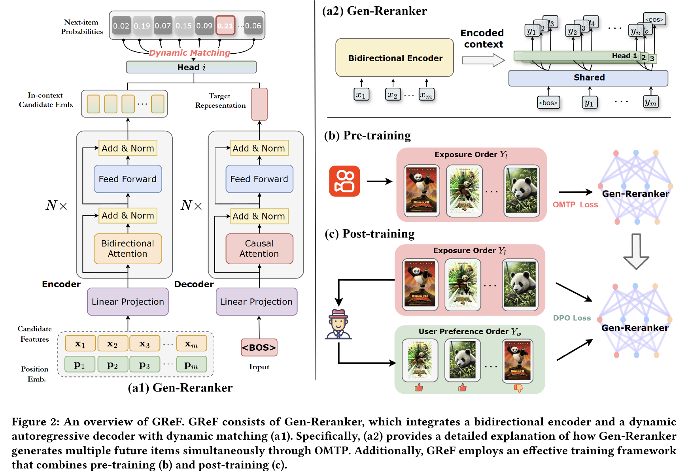
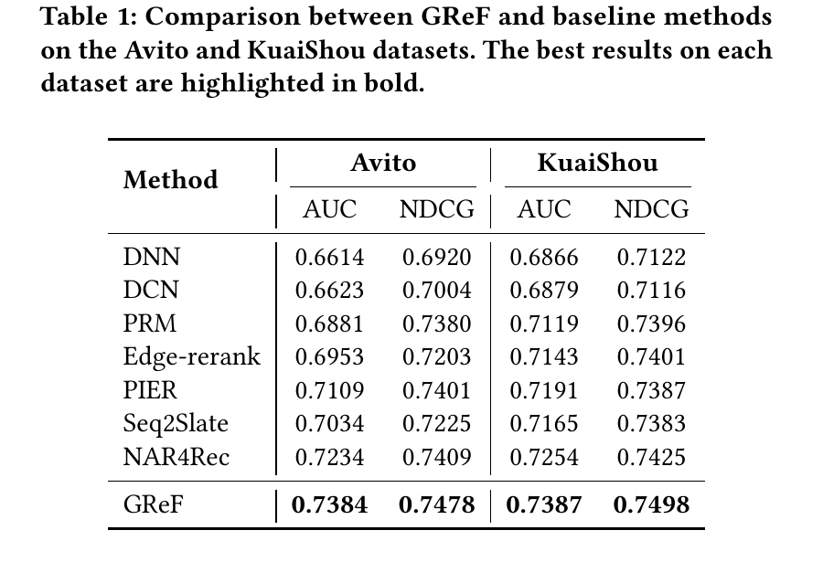
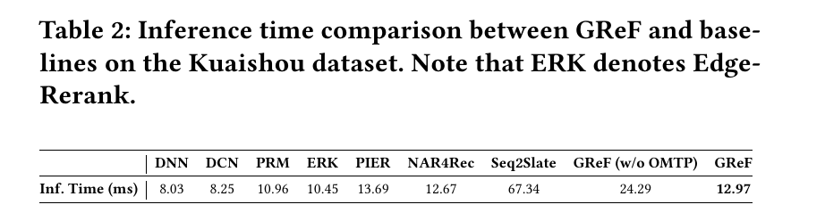
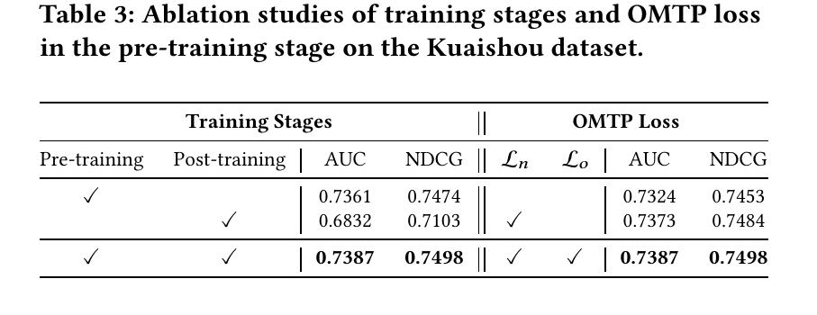
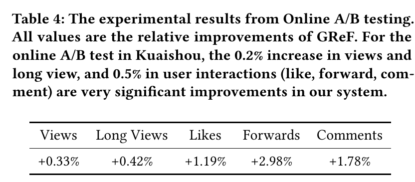

GReF
1. 基本信息
- 标题：GReF: A Unified Generative Framework for Efficient Reranking via Ordered Multi-token Prediction
- 作者：Zhijie Lin, Zhuofeng Li, Chenglei Dai, Wentian Bao, Shuai Lin, Enyun Yu, Haoxiang Zhang, Liang Zhao
- 机构：Kuaishou Technology, Shanghai University, Independent, Emory University
- 时间：arXiv v1，2025-10-29
- arXiv：https://arxiv.org/abs/2510.25220
- 本地 PDF：
C:\Users\chaol\Desktop\推荐论文阅读\re-ranking\GReF-Unified-Generative-Framework-for-Efficient-Reranking.pdf - 笔记位置：
论文笔记/重排/生成式重排/GReF.md - 分类：重排 / 生成式重排 / 自回归重排 / DPO / 高效解码
2. Vault 内相关论文 / 笔记关系检查
- 推荐系统重排最新进展：参考综述已把 GReF 放在 2025 生成式重排路线中，定位为“保留 AR 序列建模能力，同时用 Rerank-DPO 和 OMTP 降低训练-推理成本”。
- NAR4Rec：强关系。GReF 正文把 NAR4Rec 作为 two-stage non-autoregressive generative reranking 代表方法，并在离线实验和快手线上 A/B 中直接以 NAR4Rec 为关键对照；GReF 的核心主张之一就是用 OMTP 让 AR 生成接近 NAR 的延迟，同时保留因果序列建模能力。
- 未给 CMR 添加双向链接：GReF 与 CMR 都属于重排，但 GReF 正文没有以 CMR 为前置、基线或扩展对象；二者分别关注生成式序列建模和可控多目标调权，关系不足以建立论文级链接。
- 未给 NLGR 添加双向链接：GReF 在相关工作中提到 NLGR 是 NAR4Rec 后续的邻居列表路线，但实验没有把 NLGR 作为主对照，也没有直接扩展它；这里保留为脉络信息，不建立强关系。
3. 一句话总结
GReF 把两阶段 generator-evaluator 式生成重排统一成一个可端到端训练的自回归 Gen-Reranker：先用曝光顺序预训练学推荐系统已有的列表知识，再用 Rerank-DPO 把点击等序列级偏好注入模型，最后用 Ordered Multi-token Prediction 一次预测多个未来 item，使 AR 重排在快手线上达到接近 NAR4Rec 的延迟并取得更好的离线和在线效果。
4. 问题背景
重排位于多阶段推荐链路最后一层：前面的召回、粗排、精排已经给出候选列表，重排需要在有限曝光位里重新组织最终序列。论文设定候选集为 ，输出序列为 ，其中 是候选数，通常几十到几百； 是最终曝光序列长度，通常小于 10。核心困难是排列空间巨大，并且用户反馈依赖列表上下文，而不是单个 item 的孤立分数。
论文把已有重排方法分成两类：
- One-stage reranking：用上下文模型给每个候选打 refined score，再贪心排序。作者批评它的内在矛盾是：模型分数是在原始候选排列下计算的，但重排动作会改变 item 间相互影响，所以原排列下的分数未必适用于新排列。
- Two-stage generator-evaluator：generator 产生多个候选序列，evaluator 选 listwise score 最高的序列。它比 one-stage 更贴近列表级优化，但 generator 和 evaluator 分离会带来训练目标不一致、系统复杂度上升和泛化受限。
GReF 关注的是 two-stage 路线的两个瓶颈：第一，generator 和 evaluator 分离，难以端到端学习用户真正偏好的序列；第二，自回归 generator 能建模因果依赖，但逐项解码太慢，难以满足实时推荐。
5. Figure 1：为什么还要坚持自回归

Figure 1 用短视频浏览链路说明作者为什么认为 AR 对重排有价值。用户先看某个视频，后续点击/停留可能沿着主题、角色、系列或兴趣路径逐步展开；后一个 item 的吸引力并不只由它自己决定，也由前面已经曝光和消费过的内容决定。
这张图支撑的是论文对 NAR 路线的隐含判断：NAR 可以并行预测，延迟友好，但它天然弱化“前面已选内容会影响后面选择”的因果依赖。GReF 的取舍是保留 AR 的左到右因果生成能力，再用 OMTP 降低逐项生成的成本，而不是直接放弃 AR。
6. 预备知识
6.1 自回归重排
GReF 把重排序列写成带特殊 token 的序列 ，其中 是 [BOS]， 是 [EOS]。与自然语言不同，重排的输出长度通常是固定的；即便如此，论文仍把开始和结束 token 放进训练目标，以保持自回归形式。
自回归分解为：
训练时使用逐步交叉熵：
这个公式的关键不是“像语言模型一样生成 item”，而是每一步的候选只来自当前 request 的候选集 。如果直接对全站亿级 item 做 softmax，工业推荐无法承受；GReF 后面的动态匹配就是为了解决这个隐藏条件。
6.2 DPO 的作用
DPO 原本用于 LLM 偏好对齐：给定一个 prompt 、winning response 和 losing response ，直接优化策略模型相对参考模型更偏好 。GReF 借用这个思想，但把“response”换成“重排序列”。
普通 two-stage 方法让 evaluator 在线或离线选择更好的序列；GReF 的目标是把这种序列级选择变成 Gen-Reranker 自己的训练信号，从而训练后不再需要额外 evaluator 参与推理。
7. 方法总览

Figure 2 是全文核心图，分成四个部分：
- (a1) Gen-Reranker 主体：左边 encoder 用双向注意力读取候选 item 和原始位置，得到当前 request 内的候选表示；右边 decoder 用 causal attention 根据已生成前缀产生下一步目标表示；最上面的 dynamic matching 用 decoder hidden state 和候选表示做相似度匹配，输出下一 item 概率。
- (a2) OMTP 解码细节：不是每个 forward pass 只预测一个下一 item，而是用多个 head 同时预测未来若干个 item，并保持这些 head 的相对顺序。
- (b) Pre-training：用推荐系统真实曝光顺序作为大规模无标注序列，训练 Gen-Reranker 学会“当前系统认为合理的展示顺序”。
- (c) Post-training：根据用户反馈把原曝光顺序改造成用户偏好顺序，再用 DPO 让 Gen-Reranker 更偏好用户反馈更强的序列。
这张图的重点是“统一”：传统 two-stage 的 evaluator 不再作为线上选择器存在，而是被压进 post-training 的偏好优化目标；传统 AR 的逐项慢解码不被删除，而是用 OMTP 改造成多 token 并行预测。
8. Gen-Reranker
8.1 候选表示与位置表示
给定候选集 ，每个候选 item 有特征向量 ，堆成矩阵 。论文还为每个候选在上一阶段 ranking 列表里的位置初始化位置向量 ，形成 。
encoder 的输入是 。这个加法成立的条件是 item 特征和位置 embedding 都在同一维度 上；加法不会改变候选数 ，只是在每个候选表示里加入原始排序位置信息。经过双向 Transformer 后得到 ，它仍是当前候选集内的 个候选表示。
这里保留原始位置很重要：GReF 不是从无序集合里凭空生成序列，而是在已有 ranking list 上重新排序。上一阶段的排序位置包含已有系统的知识，后面的预训练也依赖“曝光顺序”作为弱监督。
8.2 动态候选词表
普通自回归语言模型的输出层是固定词表 softmax；推荐系统的 item 规模可能是亿级，而且持续变化，不能把所有 item 都作为固定词表输出。GReF 的做法是把当前 request 的候选表示 当作临时词表权重。
decoder 根据前缀 产生 hidden state ，然后和每个候选 做点积，softmax 得到当前候选集内的下一 item 概率：
这个公式说明 GReF 的输出不是“全站 item 概率”，而是“当前候选集里每个 item 作为下一位的概率”。它保留 AR 的序列依赖，同时把 softmax 复杂度从全量 item 词表降到当前候选规模 。如果没有前置 ranking 给出小候选集，这个动态词表假设就不成立。
9. 预训练：学习推荐系统世界知识
GReF 认为只用点击、点赞等显式反馈训练重排模型会过稀疏，容易过拟合。作者类比 LLM 先在大规模文本上预训练，提出用推荐系统的 item exposure order 做预训练。曝光顺序虽然不是完美用户偏好，但它来自成熟多阶段推荐系统，里面包含专家规则、上下文信号、已有 ranker 的判断和业务知识。
具体流程是：对每个训练样本，前置系统给出候选集 和最终曝光序列 ，其中 是 的子序列。模型在 上做 AR 交叉熵训练：
这一步的意义是初始化，而不是最终对齐。它让 Gen-Reranker 先学会线上系统已经认可的基本排序模式；否则直接用稀疏反馈做 DPO，容易出现训练不稳定，消融实验也证实了这一点。
10. Rerank-DPO：把用户反馈变成序列偏好
传统 generator-evaluator 的 evaluator 会对 generator 产生的多个序列打分，再选最好的。GReF 不保留这个在线 evaluator，而是离线构造 win/loss 序列对，用 DPO 把序列级偏好直接写进 Gen-Reranker。
对一个曝光序列 ，论文先为每个 item 计算 personalization score：
其中 是 在原曝光序列中的位置， 是用户反馈，例如点击，取 0 或 1； 和 控制原系统位置和用户反馈的权重。这个公式保留了两类信息：原曝光靠前说明系统本来就认为它重要，用户点击说明它对当前用户更个性化。
然后按 对曝光序列重新排序，得到用户偏好序列 。如果用户点击了 和 ，示例中可得到 ；原曝光顺序 作为 losing sequence。若 与原序列不同，就形成一个偏好对。
Rerank-DPO 的 loss 是：
这里 是继续训练的 Gen-Reranker， 是冻结的预训练模型； 等表示整条序列的 log probability 汇总。这个 reference model 很关键：它约束 DPO 不要完全偏离预训练阶段学到的推荐系统知识。论文消融里“只做 post-training”效果很差，作者解释为在 cold-start 场景下直接用用户反馈做类似 RL 的 DPO 容易训练不稳定甚至 collapse。
11. OMTP：高效但保序的多 token 预测
AR 的主要代价是长度为 的序列需要一步一步生成。OMTP 的做法是让 Gen-Reranker 在一个 forward pass 中用多个输出 head 预测未来若干个 item。为避免和前文序列长度 混淆，可以把 head 数记作 ；论文实验里 ，因为快手 App 的 UI 每屏展示 4 个视频。
给定前缀 ，共享 trunk 先产生上下文表示 ，第 个 head 预测未来第 个 item。多头交叉熵为：
这个目标只保证多个 head 分别能预测未来 item，但还没有保证 head 之间的顺序合理。比如 head 1 和 head 2 可能都预测了有用 item，但它们的先后顺序可能不符合点击或 NDCG 评价。为此，论文枚举这些 head 输出的排列，用评分函数 （如基于点击的 NDCG）判断哪个排列更好。若 ，则加入 pairwise ordered loss：
最终：
我的理解是，OMTP 的关键不是简单“多预测几个 token”，而是把并行预测和有序偏好绑定起来： 保证每个 head 能预测未来 item， 保证这些 future items 以更符合用户反馈的顺序出现。推理时还会在每一步用 binary mask 排除已经选过的 item，避免同一个候选被重复生成；这个 mask 是生成式重排落地时必需的约束，否则 softmax 仍可能再次选中高分旧 item。
12. 优化与推理流程
完整训练分两段：
- 用大规模曝光顺序和 预训练 Gen-Reranker。
- 冻结预训练模型作为 reference，用 Rerank-DPO 的 做 post-training。
推理阶段不再需要 evaluator。模型使用 OMTP 一次预测多个未来 item，通过动态候选词表只在当前候选集上打分，并通过 mask 删除已选 item。这使它保持 AR 的因果生成形式，但把 forward pass 数量显著减少。
13. 实验设置
论文使用两个数据集：
- Avito：公开搜索广告日志，超过 5300 万个列表、130 万用户、3600 万广告；前 21 天训练，后 7 天测试，每条序列 5 个广告，任务是基于列表输入预测 item-wise CTR。
- Kuaishou：快手短视频工业数据，超过 3 亿 DAU；每个样本包含用户特征、30 个候选 item 和 10 个曝光 item；数据包含 3 亿用户、7.33 亿 item、2.52 亿 request，任务是预测 item 是否进入曝光 10 个 item。
基线包括 pointwise 的 DNN、DCN，one-stage listwise 的 PRM，以及 two-stage 的 Edge-Rerank、PIER、Seq2Slate、NAR4Rec。实现上，Gen-Reranker 的 bidirectional encoder 和 dynamic autoregressive decoder 都使用 4 层 Transformer；Rerank-DPO 里 ，OMTP head 数设为 4，训练 batch size 为 1024。
14. 离线结果

Table 1 是主结果。GReF 在 Avito 上达到 AUC 0.7384、NDCG 0.7478，在 KuaiShou 上达到 AUC 0.7387、NDCG 0.7498，均为表中最佳。最关键的对照是 NAR4Rec：NAR4Rec 已经是高效生成式重排代表，但 GReF 在两个数据集的 AUC/NDCG 上都更高。
这支持了论文的核心论点：如果能解决 AR 的推理效率问题，自回归序列建模仍能比 NAR 更好地利用列表因果依赖。注意这里的结论依赖两个条件：候选集已经被前置系统缩小到几十个量级，并且曝光顺序预训练提供了足够稳定的初始化。
15. 推理延迟

Table 2 说明 OMTP 的工程意义。GReF 延迟为 12.97 ms，接近 NAR4Rec 的 12.67 ms；而去掉 OMTP 的 GReF 为 24.29 ms，Seq2Slate 更高达 67.34 ms。也就是说，GReF 不是单纯证明 AR 更准，而是把 AR 拉回到了接近 NAR 的实时部署区间。
这里要注意比较对象：DNN/DCN 仍更快，但它们是 pointwise CTR 模型，不具备相同的列表级生成能力；GReF 的主要胜利是在 two-stage/generative reranking 的可比范围内，用 AR 结构获得接近 NAR 的延迟。
16. 消融实验

Table 3 左侧比较训练阶段。只做 pre-training 已有 AUC 0.7361、NDCG 0.7474；只做 post-training 降到 AUC 0.6832、NDCG 0.7103；两者结合达到 AUC 0.7387、NDCG 0.7498。这个结果说明预训练不是可有可无的 warm-up，而是 Rerank-DPO 稳定工作的前提。
Table 3 右侧比较 OMTP loss。只用多头 next-token loss 已经达到 AUC 0.7373、NDCG 0.7484，接近完整模型；再加有序 loss 提升到 0.7387/0.7498。作者的解释是：MTP 本身能替代传统逐步 AR 预训练，而 ordered loss 进一步显式约束生成顺序，防止多头预测只学到“未来会出现哪些 item”却没学好“这些 item 该按什么顺序出现”。
17. 在线 A/B

线上实验在快手 App 上进行，使用 8% 全量生产流量，持续一周，线上 baseline 是 NAR4Rec。GReF 相对提升：Views +0.33%，Long Views +0.42%，Likes +1.19%，Forwards +2.98%，Comments +1.78%。论文特别强调在快手系统里 views/long view +0.2%、互动类指标 +0.5% 已经是显著提升，因此这些数字不是离线小幅波动，而是具有工业意义的增益。
从指标结构看，GReF 的收益不只体现在曝光量，也体现在更深的互动，尤其是转发和评论。这与作者对 AR 的动机一致：更好的序列依赖建模可能让用户沿着内容链路继续消费和互动。
18. 结论与局限
GReF 的贡献可以记成三句话：
- 用 Gen-Reranker 把候选集编码、AR 解码和动态候选匹配合到一个生成式重排模型里，避免亿级 item softmax。
- 用曝光顺序预训练 + Rerank-DPO 后训练，把传统 generator-evaluator 的序列级偏好压进一个端到端模型。
- 用 OMTP 同时预测多个未来 item，并用 ordered loss 保序，使 AR 重排延迟接近 NAR4Rec。
局限和隐含条件也很明确：
- 方法依赖强前置推荐系统提供小候选集和高质量曝光顺序；如果曝光顺序本身很差，预训练会继承偏差。
- Rerank-DPO 的 win/loss 构造把点击等反馈作为偏好信号，仍会受到曝光偏差、位置偏差和稀疏反馈影响。
- OMTP 的 head 数和展示 UI 有耦合，论文在快手设置为 4，是因为每屏 4 个视频；换到别的展示结构可能需要重新设计。
- 线上结果来自快手内部系统，公开数据只覆盖 Avito；工业可复现性依赖相似规模的数据、候选链路和延迟预算。
19. 记忆锚点
- GReF 是“AR 生成式重排的工程化回归”：不放弃因果依赖，用 OMTP 把 AR 做快。
- 动态候选词表是可落地关键：decoder 输出和当前候选 embedding 做匹配，而不是全站 item softmax。
- 预训练学系统知识，DPO 学用户偏好；只做 DPO 会不稳定。
- OMTP 必须同时看效率和顺序： 负责多未来 item， 负责这些 item 的相对顺序。
- 与 NAR4Rec 的核心差别：NAR4Rec 用非自回归并行换效率，GReF 用 OMTP 保留自回归因果性同时逼近 NAR 延迟。
20. 图表覆盖检查
- Figure 1：已解释并嵌入，用于说明用户浏览行为中的因果依赖。
- Figure 2：已解释并嵌入，覆盖 Gen-Reranker、OMTP、pre-training、post-training。
- Table 1：已解释并嵌入，主离线结果。
- Table 2：已解释并嵌入，推理延迟对比。
- Table 3：已解释并嵌入，训练阶段和 OMTP loss 消融。
- Table 4：已解释并嵌入，快手线上 A/B 结果。